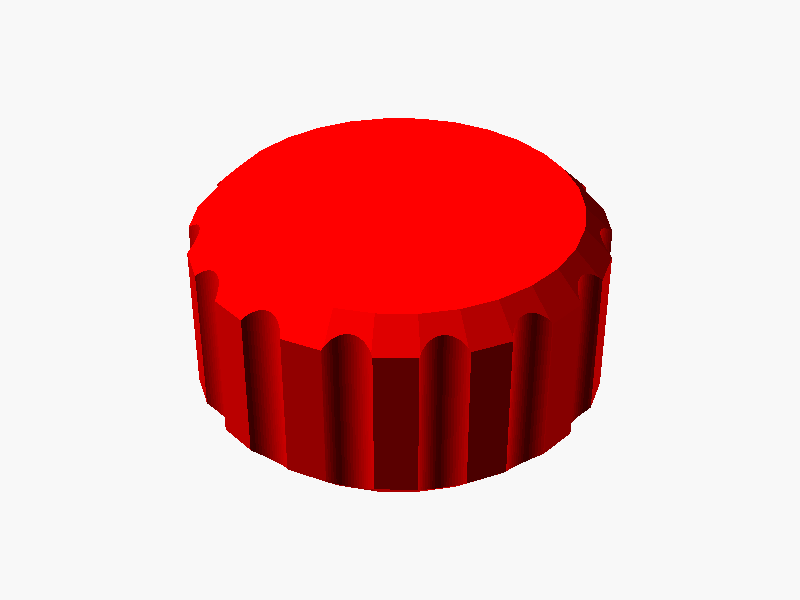
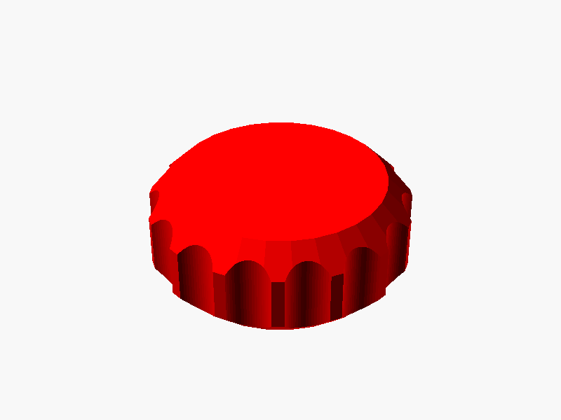
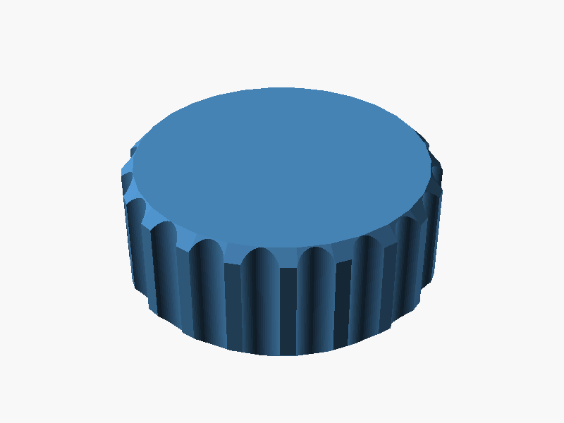
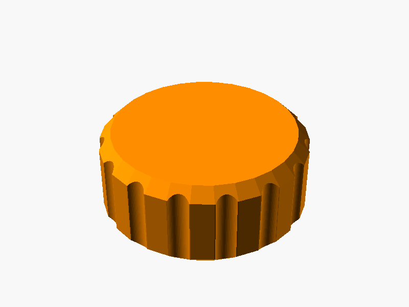
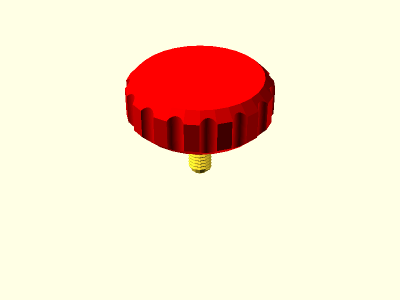
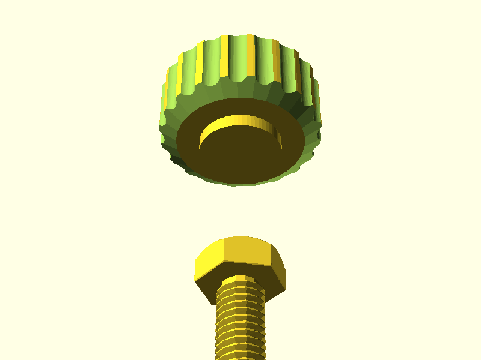
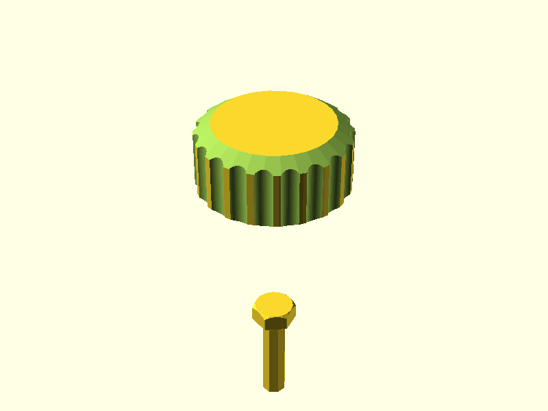
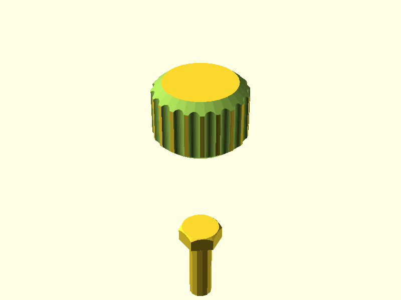

Parametric thumbscrew knobs come up often enough in 3D printing projects that it is worth having a reusable library for them. This post covers a fork of aminGhafoory/parametric-knob-maker that adds a generalised round knob module. The fork is at morganp/parametric-knob-maker.
The library was used to generate the thumbscrew knob in the pinch rods post.
Installation
Clone or download the repository into your OpenSCAD libraries folder:
~/.local/share/OpenSCAD/libraries/ (Linux)
~/Documents/OpenSCAD/libraries/ (macOS)
My Documents\OpenSCAD\libraries\ (Windows)
The knob() Module
File: parametric_knob.scad
The round knob has a narrower offset base for mounting clearance, chamfered top and bottom edges, and equally-spaced cylindrical grip cutouts around the perimeter. Z=0 is at the base, making it straightforward to position on top of a screw shaft.
include <parametric-knob-maker/parametric_knob.scad>
knob(
knob_height, // height of the main knob body (default: 15)
knob_diam, // diameter of the main knob body (default: 30)
offset_height, // height of the narrower base section (default: 5)
offset_diam, // diameter of the base section (default: knob_diam/2)
knob_chamfer, // top edge chamfer depth at 45 deg (default: 2)
base_chamfer, // base edge chamfer depth at 45 deg (default: 1)
num_grip_cutouts, // number of finger grip cutouts (default: 15)
grip_cutout_diam, // diameter of each grip cutout (default: 4)
cutout_radius_adj, // outward offset of cutout centres (default: 1)
knob_color // preview colour (default: "red")
);
Default knob
include <parametric-knob-maker/parametric_knob.scad>
knob();

Small thumbscrew knob
Compact knob for M3/M4 screws where finger space is limited.
include <parametric-knob-maker/parametric_knob.scad>
knob(knob_height=8, knob_diam=20, offset_height=2);

Large adjustment knob
Wider knob with more cutouts for applications needing higher torque or finer control.
include <parametric-knob-maker/parametric_knob.scad>
knob(
knob_height = 20,
knob_diam = 50,
num_grip_cutouts = 20,
grip_cutout_diam = 6,
knob_color = "SteelBlue"
);

Slim base
A narrow offset base minimises the footprint on the mounting surface -- useful when the knob sits close to a panel or bracket.
include <parametric-knob-maker/parametric_knob.scad>
knob(
knob_height = 15,
knob_diam = 35,
offset_height = 2,
offset_diam = 10,
knob_color = "DarkOrange"
);

Combining with a BOSL2 screw
The knob() module pairs neatly with BOSL2's screw() to produce a complete thumbscrew assembly. Place the screw with anchor=BOTTOM so the thread points downward, then translate the knob up to sit on top of the shaft.
include <parametric-knob-maker/parametric_knob.scad>
include <BOSL2/std.scad>
include <BOSL2/screws.scad>
THREAD_LEN = 12;
union() {
screw(spec="M5", length=THREAD_LEN+1, thread=true, anchor=BOTTOM);
translate([0, 0, THREAD_LEN])
knob(knob_height=10, offset_height=1);
}

The hex_knob() Module
File: parametric_hex_knob.scad
The hex knob is intended to capture a hex-head bolt in its base recess and provide a through-hole for the shaft, removing the need for any additional fastener. The hex screw recess is currently under development and commented out -- the module renders the knob body and grip cutouts only.
include <parametric-knob-maker/parametric_hex_knob.scad>
hex_knob(
knob_height, // height of the knob body (default: 15)
knob_diam, // diameter of the knob (default: 30)
screwhead_facetoface, // hex head face-to-face size (mm) (default: 8)
screwhead_depth, // depth of hex recess (default: 12)
thru_hole_diam, // through-hole diameter (default: 4)
num_grip_cutouts, // number of finger grip cutouts (default: 20)
grip_cutout_diam, // diameter of each grip cutout (default: 4)
cutout_radius_adj // outward offset of cutout centres (default: 1)
);
The screwhead_facetoface parameter corresponds to the face-to-face dimension s in DIN 933. The knob is designed to capture the bolt head in the base recess with the shaft passing through -- the hex recess feature is still under development.

| Default hex knob |
Large hex knob |
 |
 |
Implementation Notes
The knob() geometry is built from 2D profiles rotated with rotate_extrude(). Chamfers are cut using difference() against polygon shapes. Grip cutouts are placed by a helper module rotate_on_circle() that distributes cylinders at equal angular intervals around the perimeter using sin()/cos() positioning.
The source is on GitHub at morganp/parametric-knob-maker.